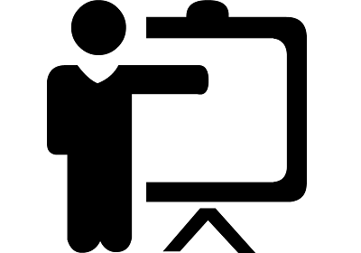

Umiejętności:
Znajomość języka programowania Java(OOP, Wzorce projektowe m.in. DAO, MVC, enumy, polimorfizm, interfejsy).
Podstawowa znajomość Spring Framework(Spring Data, Spring Boot) oraz Hibernate.
Podstawowa znajomość programowania Android oraz narzędzi(ButterKnife, Retrofit, Picasso).
Znajomość Systemu Kontroli Wersji GIT.
Podstawowa znajomość baz danych: SQLite, MySQL.
Podstawowa znajomość HTML oraz CSS.
Znajomość OS Linux (Ubuntu) oraz Windows(7-10).
Znajomość IDE Eclipse, IntelliJ, Android Studio.
Wysokie umiejętności interpersonalne.
Pracowity, niezawodny, punktualny.
Prawo jazdy.

Szkolenia:
Kurs JavaBootcamp – Akademia Kodu, Warszawa (Listopad – Grudzień 2016).
certyfikat Wewnętrznego Auditora Jakości (czas trwania - 30h), Bureau Veritas we współpracy z UP Lublin.
certyfikat z projektowania 3D w Autodesk Inventor - stopień advanced, Autodesk we współpracy z UP Lublin.
kurs instruktora rekreacji ruchowej, narciarstwo zjazdowe.

Doświadczenie:
2015 – 2016 – pomocnik operatora maszyn, MW Lublin Sp. z o.o. (produkcja felg samochodowych).
2013 – 2016 – instruktor narciarstwa zjazdowego w kompleksie narciarskim „Nartraj” w Chrzanowie.
2005 – 2014 – pracownik w gospodarstwie rolnym.

Wykształcenie:
2014 – 2015 - Uniwersytet Przyrodniczy w Lublinie, Technika Motoryzacyjna i Energetyka.
2010 – 2014 - Uniwersytet Przyrodniczy w Lublinie, Odnawialne Źródła Energii i Ekoenergetyka.
2007 – 2010 - Liceum Ogólnokształcące im. Bohaterów Porytowego Wzgórza w Janowie Lubelskim.